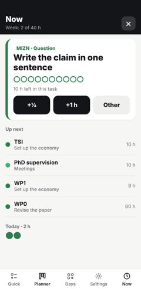
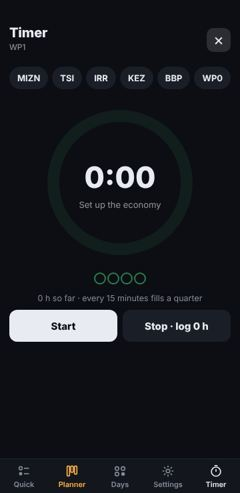
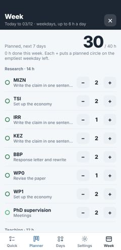
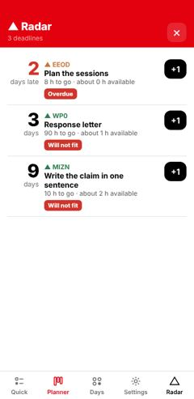
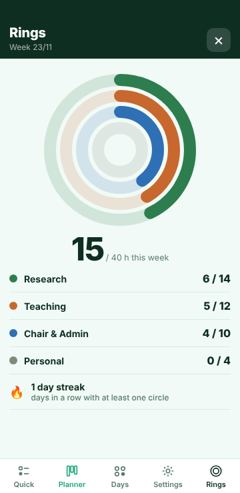
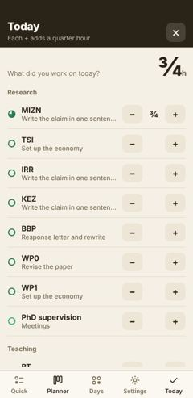
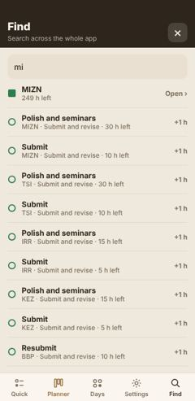
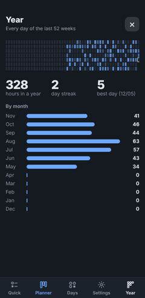
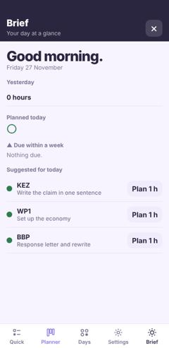
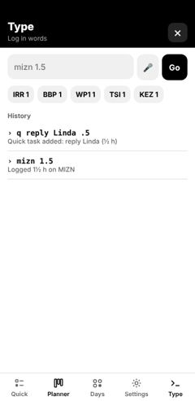

The full minimal app, each with its own way of working. Copies your Hours data on first open, then keeps its own.

01 · NowOpens on Now: one suggested task from your budget and ▲ deadlines, log it right there.
02 · TimerA focus timer: pick a project, start, and each quarter hour becomes a circle in Days when you stop.
03 · WeekPlan the week in one place: set hours per project and the planned circles appear in Days; Autofill fills to your budget.
04 · RadarEvery ▲ deadline counted down, with whether the hours still fit at your weekly budget.
05 · RingsClose your rings: one ring per category for this week's budget, a streak, and confetti when the week is full.
06 · TodayEnd-of-day logging: one list with ± quarters per project for today; it opens by itself after 17:00.
07 · FindSearch everything: type a few letters to open a project, log an hour on a task, or tick a quick task.
08 · YearA year of circles as a heatmap, with streaks, best day and hours per month.
09 · BriefA morning brief on the first open each day: yesterday, today's plan, ▲ due this week, and three tasks to plan in one tap.
10 · TypeLog by typing or speaking: 'mizn 1.5', 'q reply Linda .5', 'plan bt 2'. Works offline, keeps a history.